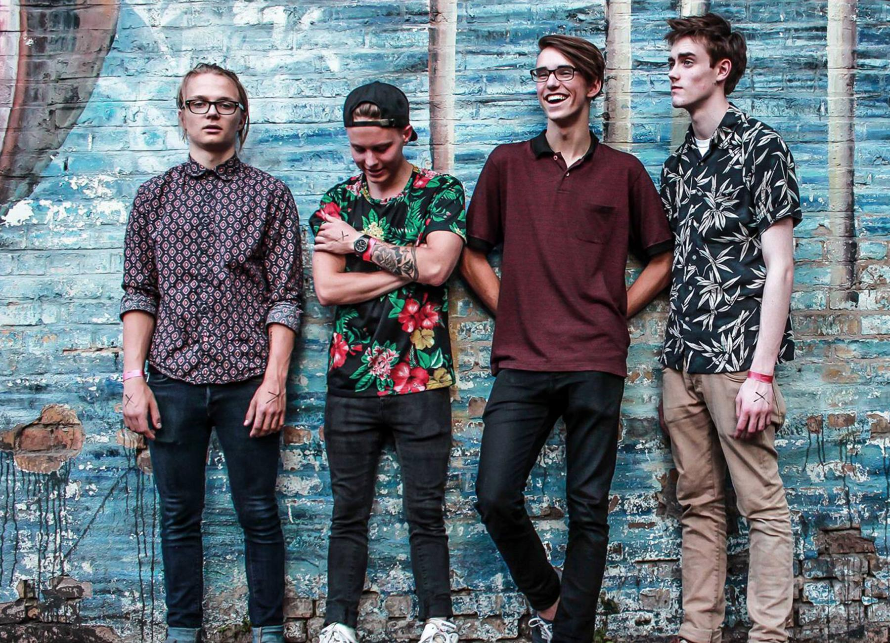

Click here to go back to the homepageHippo Campus is an indie rock band from St. Paul, Minnesota. They are signed to Grand Jury Records in the United States and Transgressive Records in the UK. Their first full length LP "Landmark" was released in early 2017.
Night Riots is an American alternative rock band from San Luis Obispo, California. Formed in 2010, the band consists of Travis Hawley, Nick Fotinakes, Matt DePauw, Mikel Van Kranenburg, and Rico Rodriguez.
Remo Drive is an American emo band from Bloomington, Minnesota. The band consists of brothers Eric Paulson, Stephen Paulson, and Sam Mathys. Their debut album entitled "Greatest Hits" has received rave reviews in the past year and they have gone on tour with bands such as Hippo Campus and Sorority Noise.
Sorority Noise is an American rock band from Hartford, Connecticut. The band consists of members from the bands Old Gray and Prawn.
The Obsessives is an American Indie Rock/Emo Pop band from Washington, D.C.. They have been releasing music since 2014 with their most recent release being a self titled LP in 2017.